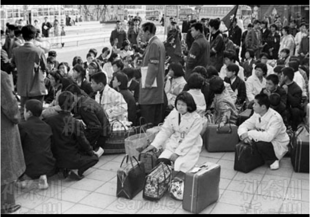

テーマ『わたしのみた昭和の横浜ー故郷から横浜へ、進学、就職、結婚、育児』
Question
Q1.いつ頃から横浜にお住みですか？
Q2.横浜に住み続けようと思った理由があれば教えてください。
Q3.横浜に住んでいて良かったことは何かありますか？
Q4.横浜で起きた印象的な出来事があれば教えてください。(進学)
Q5.どのような企業に就職されたのですか？(就職)
Q6.いつ頃ご結婚なされたのですか？(結婚)
Q7.お子さんやお孫さんはいらっしゃいますか？(育児)
Q8.どんなお子さん・お孫さんですか？(育児)
Q9.子育てで一番苦労されたことは何ですか？(育児)
Q10.子育てをする上で、横浜の地域で便利に感じたことがあれば教えてください。(育児)
Picture
